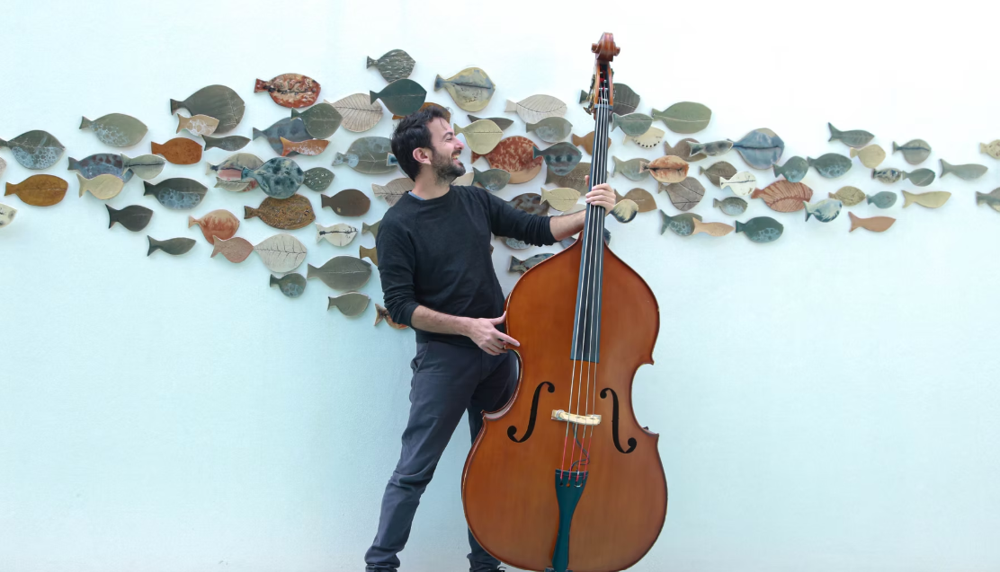
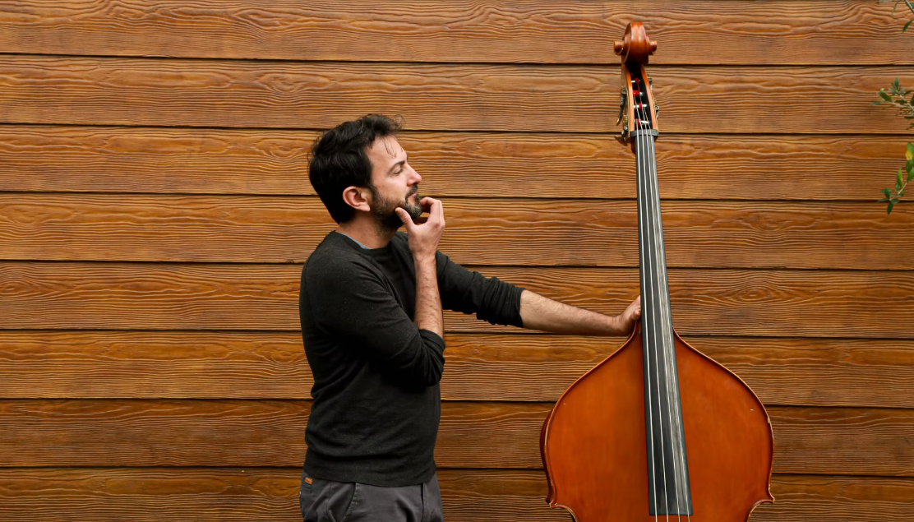
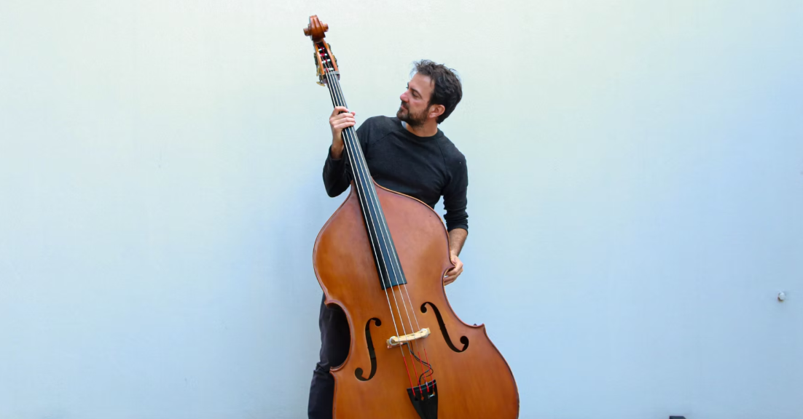
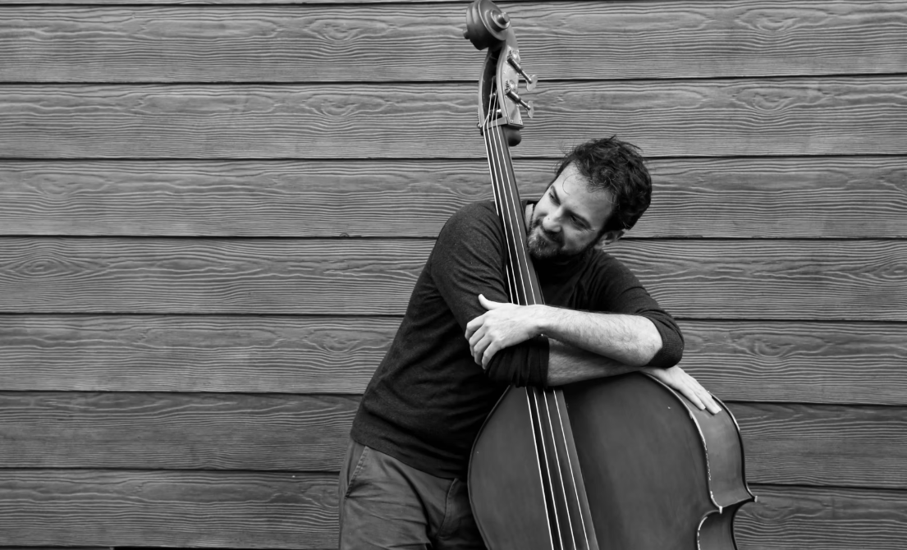
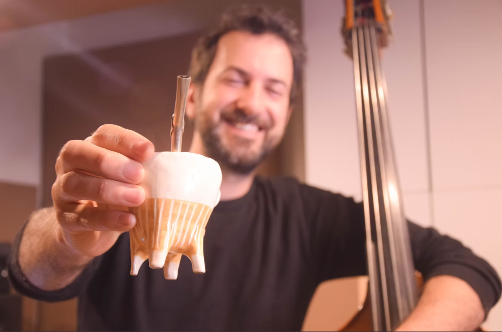
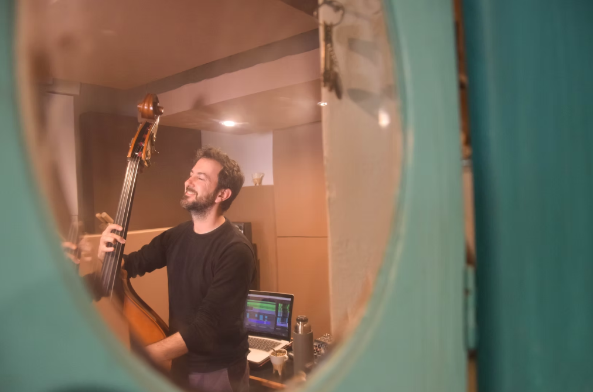
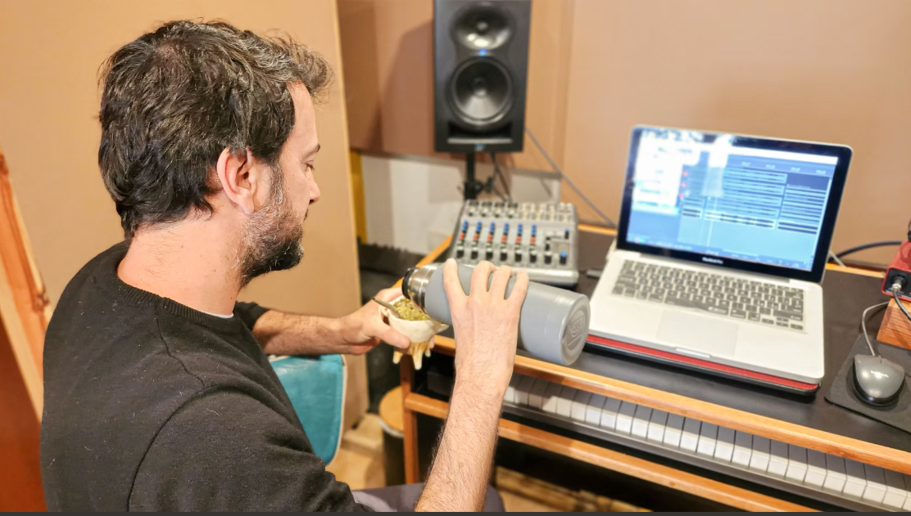
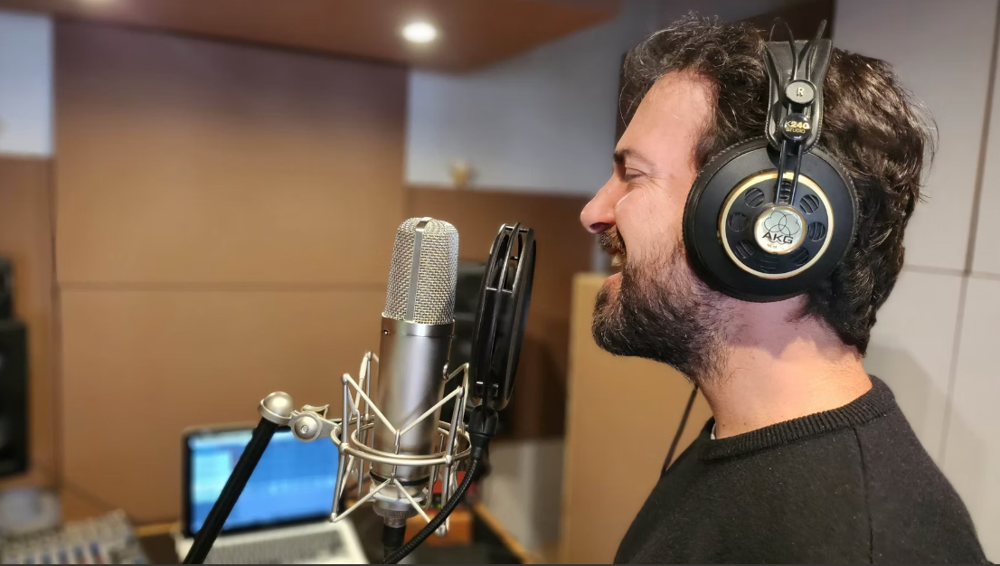

MÚSICO · CONTRABAJISTA · COMPOSITOR · CANTAUTOR
Pablo Brie

LOS COMIENZOS
Una formación musical desde el origen.
Pablo Brie es músico, contrabajista, compositor y cantautor argentino. Nacido en Córdoba en los años 80, inició su formación en el Colegio de Niños Cantores Domingo Zípoli, donde adquirió sus primeras herramientas musicales y la experiencia coral que marcaría su trayectoria.
Más tarde se trasladó a Buenos Aires, donde estudió Guitarra y Música Electroacústica en la Universidad Nacional de Quilmes, desarrollando un fuerte interés por la experimentación sonora.

02
EL CONTRABAJO
Encontrar una voz propia.
En paralelo descubrió el contrabajo, instrumento que estudió durante una década con Juan Pablo Navarro.
El teatro entra en escena.
En 2003 comenzó su vínculo con el teatro musicalizando obras del dramaturgo César Brie en Bolivia, Italia y México.
Desde entonces ha compuesto música original para más de quince producciones teatrales, entre ellas El Equilibrista de Mauricio Dayub, reconocida internacionalmente.
En 2013 editó un disco con sus composiciones para teatro.

MÚSICA · TEATRO
FORMACIÓN · DOCENCIA
La música también se comparte.
Desde 2009 integra el Programa de Coros y Orquestas de la Provincia de Buenos Aires, donde desarrolla una intensa labor docente y de formación musical.
Participó en diversos proyectos artísticos como Curepas, La Máquina de hacer Chacareras y la Orquesta Típica Agustín Guerrero, con los que realizó discos y giras nacionales e internacionales.



Tierra Adentro.
En 2015 formó junto a la ceramista Paulina Rucco una dupla artística interdisciplinaria, con la que presentó Experiencia Tierra Adentro, un espectáculo que combina música, cerámica y teatro, y editó su primer disco como cantautor, Este Barro.
Desde 2022 impulsan Un Mate en la Vereda, encuentro barrial mensual que promueve la convivencia a través del arte.
HISTORIAS CONTRABAJO
El contrabajo como historia.
En 2025 publicó Historias Contrabajo, disco y obra unipersonal dirigida por César Brie, donde confluyen sus principales búsquedas: el contrabajo, la canción, la electroacústica y el teatro.
CONOCER HISTORIAS CONTRABAJO ↗